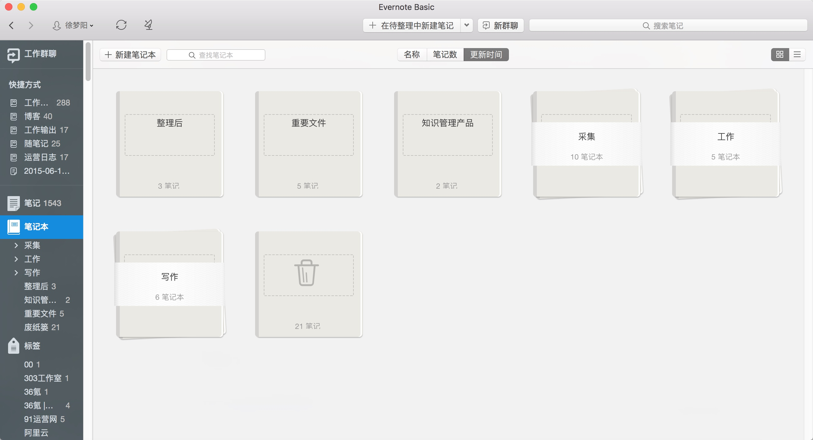
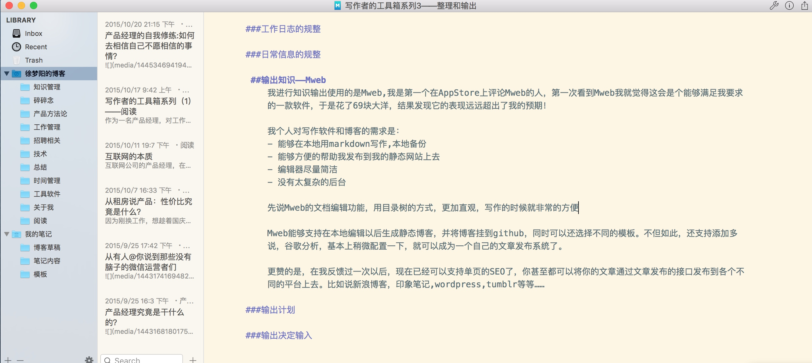
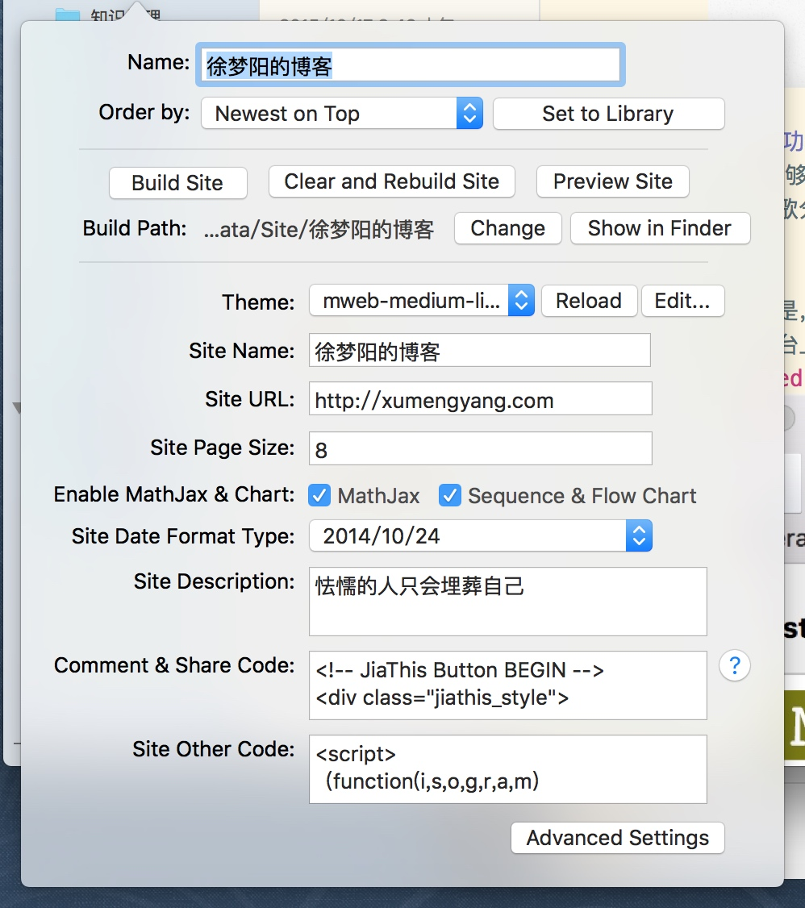

前面的两篇文章《写作者的工具箱系列1—阅读》、《写作者的工具箱系列2—知识的采集》已经先后写到从阅读到采集的过程。
然而，阅读和采集只是知识管理方法里面的收集阶段。信息收集来了以后，如何进行整理和输出的处理，则是更有意义的事情了，而这两者处理的结果最终决定了你阅读的效果。
我在整理知识的时候，使用的是印象笔记，写作用的是Mweb。到了这个阶段，使用什么样的工具其实就并不重要了，更重要的是方法，是如何使用工具达到自己的目的。
整理知识——印象笔记
关于印象笔记，之前的工具箱文章里面已经说过，这里就不多阐述了。关于知识的规整，我这里分为两部分：一部分是平时工作的时候记录的工作日志，另外一部分则是我自己平时采集的各种各样稀奇古怪的知识，在这里分开说一下。
我把印象笔记分为如下几块：

- 工作
- 采集
- 写作
我分别简单的说一下
工作
关于工作日志，我曾经写过一篇关于工作日志的方法，这里再简单的说一下。我从去年的十一月份开始记录工作日志，主要记录如下几个东西：
- 每日计划
- 每日计划的执行情况
- 每日总结
每日计划，我会在早上起来的时候想好，今天一天要做什么。然后到了公司以后，先写好计划，然后按照计划执行。通常上午和下午五六点的时候效率比较高，这个时候我会写一些总结的内容和产品设计。其它的时间我会做类似于：跟产品的同事开需求会议，筛选简历，招人，找客户聊需求这些对专注度要求不是那么高的事情。到了晚上，我会回顾一下今天的工作，然后写一下总结，对自己有什么做的不好，效率不高的地方进行改进，然后每周的周末总结一次。
最后针对自己薄弱/不清楚的地方去找资料去看，找人了解，然后写一些文章，强迫自己输出。
采集
而针对采集到的一些文章的段落，书评，我处理的就不是很仔细，就简单的打个标签。写作的时候需要用到的，会在印象笔记里面检索一下。
我主要针对两个点做处理，一个是书本，一个是体系化的知识。
关于书，我的处理是在印象笔记里面筛选了一遍以后，放到另外一个工具——Doit.im 内，然后按照顺序去读。

而体系化的知识，我就在印象笔记里面建立起了一个简单的知识库，放到知识库内归并。等到觉得可以写出来的时候，再按照专题的方式通过写作的手段放出来。以后可能要做一个自己的wiki，不过现在的量比较小，先放印象笔记里面存着……
写作
当知识积累到某个量级，我觉得有一点价值的时候，我就会开始写出来。
输出知识——Mweb
工欲善其事，必先利其器。我进行知识输出使用的是Mweb软件,我是第一个在AppStore上评论Mweb的，第一次看到Mweb我就觉得这会是个能够满足我要求的一款软件，于是便花费了69块大洋。
我个人对写作软件和博客的需求是：
- 能够在本地用markdown写作,本地备份
- 能够方便的帮助我发布到我的静态网站上去
- 编辑器尽量简洁
- 没有太复杂的后台
结果发现它的表现远远超出了我的预期！它主要有几个功能是我非常喜欢的
文本编辑功能
先说Mweb的文档编辑功能，不光使用markdown，同时还以目录树的方式来展示，就显的更加的直观了。

写作的时候也非常的方便，可以在写的时候可以按下command+R的快捷键预览一下最终的显示效果

博客增强功能
Mweb能够支持在本地编辑以后生成静态博客，并将博客挂到github，同时可以还选择不同的模板。不但如此，还支持添加多说，谷歌分析，基本上稍微简单的配置一下，就可以成为一个自己的文章发布系统了。

更赞的是，在我反馈过一次以后，现在已经可以支持单页的SEO了，你甚至都可以将你的文章通过文章发布的接口发布到各个不同的平台上去。比如说新浪博客，印象笔记,wordpress,tumblr等等……

写作的计划和执行
可以安心写作以后，我就决定要有计划的输出，根据自己的经验，避免像以前一样，知识管理无果而终……于是我在印象笔记里面建了个写作的文件夹

后来发现貌似印象笔记不太适合调整优先级的顺序，于是又使用doit.im整理了一下

写的时候，先列好提纲，准备好素材就开写。每开始写的时候，记录时间，写完一篇，总结一下，看看时间浪费在什么地方，然后不断的进行刻意训练，这样，写的就越来越快。不过文章的校正自己做的还不够，经常被人发现有错字的情况，最近稍微改正了一些，争取以后尽量避免在这些细枝末节的问题上出现错误吧。关于整理和总结，我做的还不够，希望大家能够多多指点：）。
写完了这篇，我的写作者的工具箱系列就写完了。简单的总结一下，就是写作要从阅读做起，到知识的采集，处理，到了最后就是总结输出，其中每一个环节都很重要，如果大家有什么好的工具和方法，也可以跟我反馈一下，大家一起进步。
最近有很多人问我关于公众号排版的问题，下一篇我会再写写公众号排版时候用到的工具，欢迎关注！